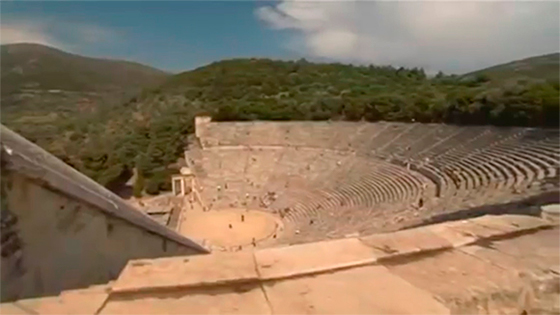
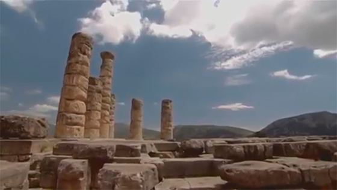

Одиссея. Первая страница. Песнь...
Богиню Афину Прежде других Телемах богоравный увидел. Прискорбен Сердцем, в кругу женихов он сидел, об одном помышляя: Где благородный отец и как, возвратяся в отчизну, Хищников он по всему своему разгоняет жилищу, Власть восприимет и будет опять у себя господином.


В мыслях таких с женихами сидя, он увидел Афину; Тотчас он встал и ко входу поспешно пошел, негодуя В сердце, что странник был ждать принужден за порогом; приближась, Взял он за правую руку пришельца, копье его принял...